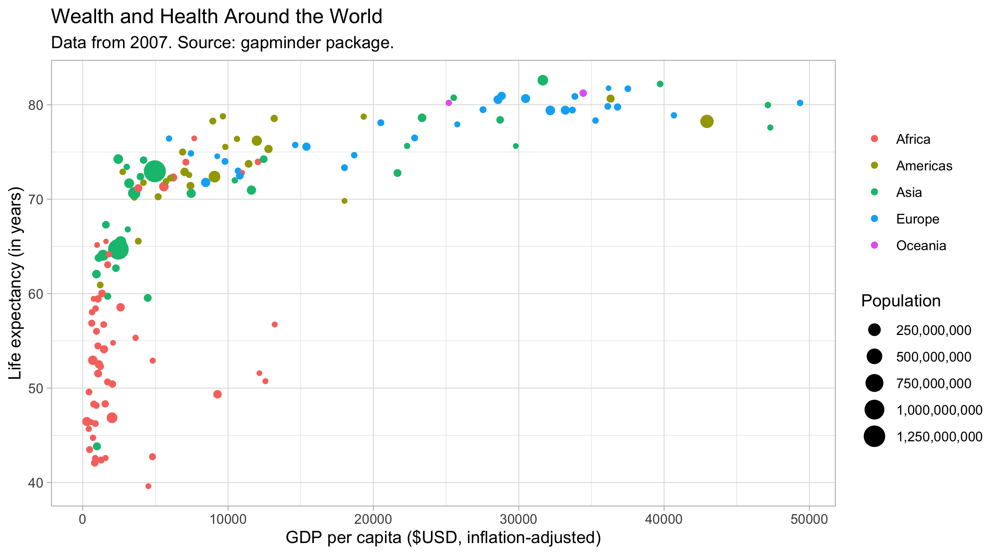
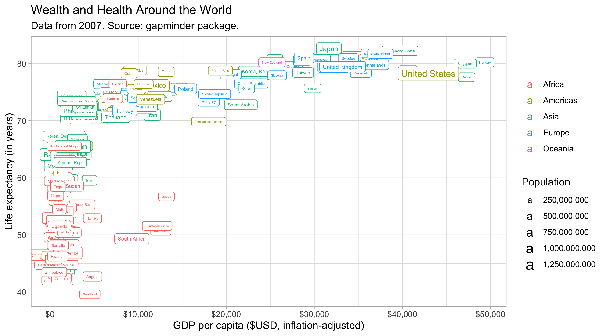
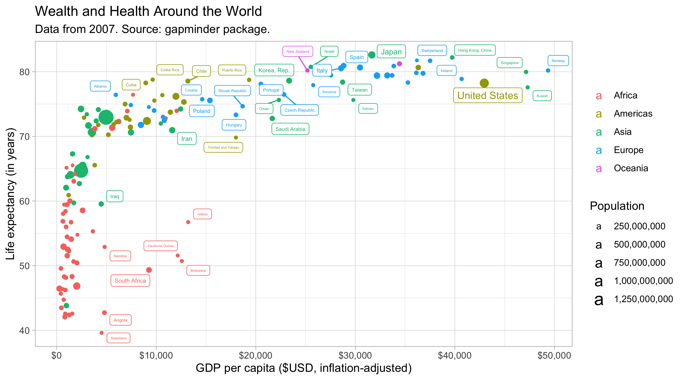
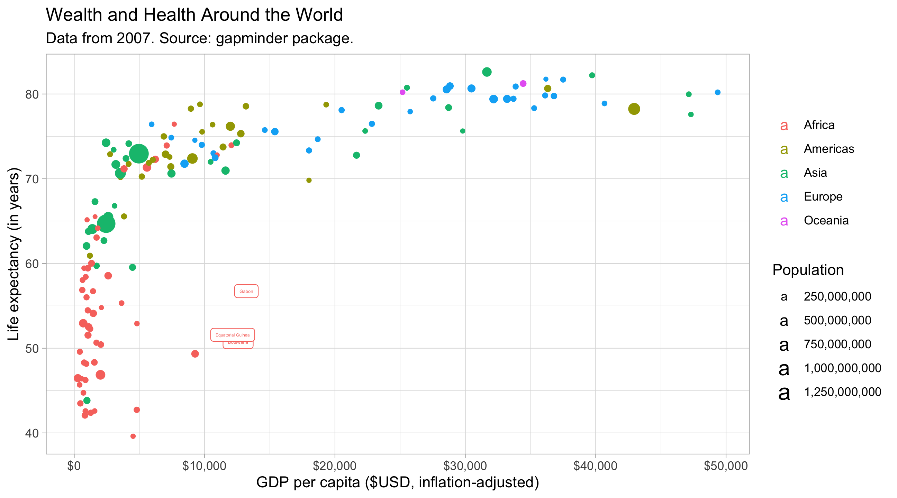
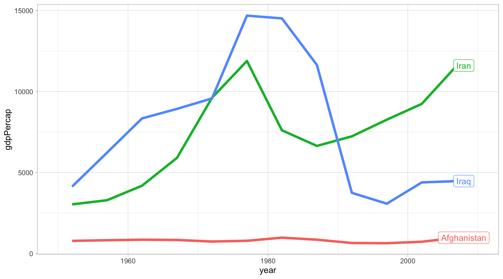
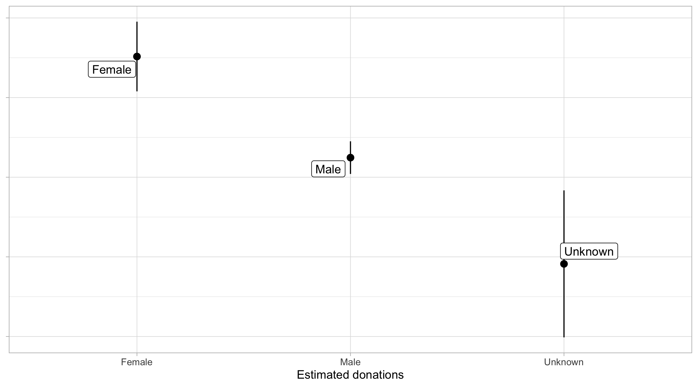
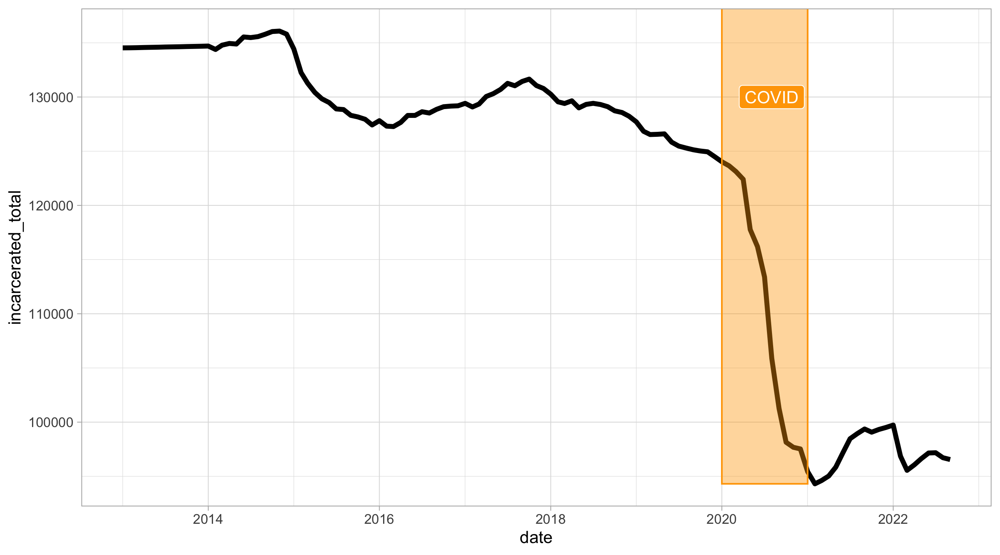
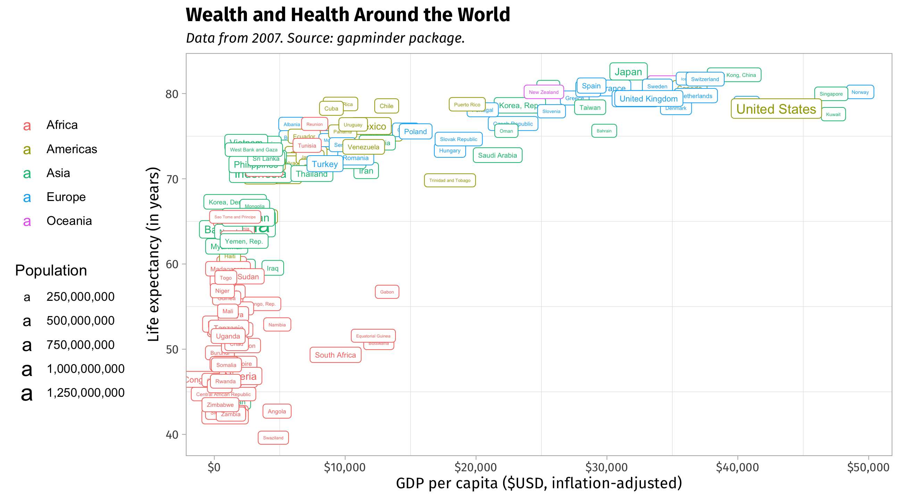
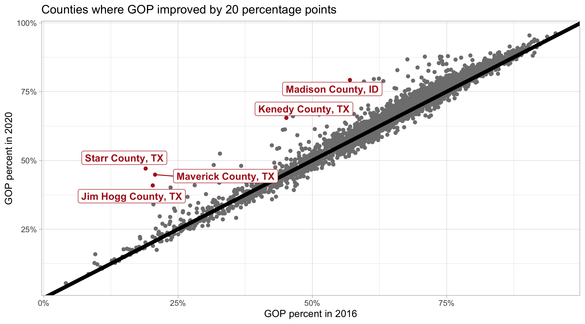

library(tidyverse)
library(juanr)
library(gapminder)
theme_set(theme_light())07-annotations
Load libraries:
Titles
labs lets you define a title for every aesthetic. Some titles are obvious and don’t need a title (like continent).
gap_07 = gapminder |> filter(year == 2007)
# plot
ggplot(gap_07, aes(x = gdpPercap, y = lifeExp,
color = continent,
size = pop)) +
geom_point() +
labs(x = "GDP per capita ($USD, inflation-adjusted)",
y = "Life expectancy (in years)",
title = "Wealth and Health Around the World",
subtitle = "Data from 2007. Source: gapminder package.",
color = NULL, size = "Population") +
scale_size_continuous(labels = scales::comma)
Change the x-axis to dollars using scales:
ggplot(gap_07, aes(x = gdpPercap, y = lifeExp,
color = continent,
size = pop)) +
geom_point() +
labs(x = "GDP per capita ($USD, inflation-adjusted)",
y = "Life expectancy (in years)",
title = "Wealth and Health Around the World",
subtitle = "Data from 2007. Source: gapminder package.",
color = NULL, size = "Population") +
scale_size_continuous(labels = scales::comma) +
scale_x_continuous(labels = scales::dollar)Labeling points
We can add labels to the points:
ggplot(gap_07, aes(x = gdpPercap, y = lifeExp,
color = continent,
size = pop, label = country)) +
geom_point() +
labs(x = "GDP per capita ($USD, inflation-adjusted)",
y = "Life expectancy (in years)",
title = "Wealth and Health Around the World",
subtitle = "Data from 2007. Source: gapminder package.",
color = NULL, size = "Population") +
scale_size_continuous(labels = scales::comma) +
scale_x_continuous(labels = scales::dollar) +
geom_label()
ggrepel has a function that will repel labels away from each other.
ggplot(gap_07, aes(x = gdpPercap, y = lifeExp,
color = continent,
size = pop, label = country)) +
geom_point() +
labs(x = "GDP per capita ($USD, inflation-adjusted)",
y = "Life expectancy (in years)",
title = "Wealth and Health Around the World",
subtitle = "Data from 2007. Source: gapminder package.",
color = NULL, size = "Population") +
scale_size_continuous(labels = scales::comma) +
scale_x_continuous(labels = scales::dollar) +
ggrepel::geom_label_repel()
With this many points, not effective to label them all. Better to focus on special cases. One way to do this is to identify the special cases in your data, store as an object, then use that object in geom_label.
look_at = gap_07 |>
filter(gdpPercap > mean(gdpPercap, na.rm = TRUE),
lifeExp < mean(lifeExp, na.rm = TRUE))
ggplot(gap_07, aes(x = gdpPercap, y = lifeExp,
color = continent,
size = pop)) +
geom_point() +
labs(x = "GDP per capita ($USD, inflation-adjusted)",
y = "Life expectancy (in years)",
title = "Wealth and Health Around the World",
subtitle = "Data from 2007. Source: gapminder package.",
color = NULL, size = "Population") +
scale_size_continuous(labels = scales::comma) +
scale_x_continuous(labels = scales::dollar) +
geom_label(data = look_at, aes(label = country))
Time series look nice with labels. The trick is that the label data needs to be one point only, a good idea is to pick the last point in the series and then make the x-axis longer:
subset =
gapminder |>
filter(country %in% c("Afghanistan", "Iran", "Iraq"))
labels =
subset |>
filter(year == max(year))
ggplot(subset, aes(x = year, y = gdpPercap, color = country)) +
geom_line(size = 1.5) +
geom_label(data = labels, aes(label = country), nudge_x = 1) +
theme(legend.position = "none") +
scale_x_continuous(limits = c(1950, 2010))
We can use labels with models too:
mod = lm(total_disbursements ~ gender, data = bonica)
mod |> broom::tidy()# A tibble: 3 × 5
term estimate std.error statistic p.value
<chr> <dbl> <dbl> <dbl> <dbl>
1 (Intercept) 878941. 55797. 15.8 3.15e-55
2 genderM -317426. 61609. -5.15 2.62e- 7
3 genderU -650969. 130260. -5.00 5.91e- 7Plot:
ggeffects::ggpredict(mod, terms = c("gender")) |>
as_tibble() |>
mutate(x = case_when(x == "M" ~ "Male",
x == "F" ~ "Female",
x == "U" ~ "Unknown")) |>
ggplot(aes(x = x, y = predicted, ymin = conf.low, ymax = conf.high, label = x)) +
geom_pointrange() +
ggrepel::geom_label_repel() +
theme(axis.text.y = element_blank()) +
labs(y = NULL, x = "Estimated donations")
The annotate function can be used to make annotations on the plot. For instance:
ca_prison = prison |>
filter(state == "California")
ggplot(ca_prison, aes(x = date, y = incarcerated_total)) +
geom_line(size = 1.5) +
annotate(geom = "rect", xmin = ymd("2020-01-01"), xmax = ymd("2021-01-01"),
ymin = min(ca_prison$incarcerated_total, na.rm = TRUE), ymax = Inf,
alpha = .4, color = "orange", fill = "orange") +
annotate(geom = "label", x = ymd("2020-08-01"), y = 130000, label = "COVID",
fill = "orange", color = "white")
The theme function lets us control all the theme elements. There’s a ton of options:
ggplot(gap_07, aes(x = gdpPercap, y = lifeExp,
color = continent,
size = pop, label = country)) +
geom_point() +
labs(x = "GDP per capita ($USD, inflation-adjusted)",
y = "Life expectancy (in years)",
title = "Wealth and Health Around the World",
subtitle = "Data from 2007. Source: gapminder package.",
color = NULL, size = "Population") +
scale_size_continuous(labels = scales::comma) +
scale_x_continuous(labels = scales::dollar) +
geom_label() +
theme(legend.position = "left",
axis.title = element_text(family = "Fira Sans"),
axis.text = element_text(family = "Fira Sans"),
plot.title = element_text(family = "Fira Sans Bold", size = 14),
plot.subtitle = element_text(family = "Fira Sans Italic", size = 10),
panel.grid.major = element_blank())
Rankings
The rank function can be used to rank observations:
gop = elections |>
select(name, state, per_gop_2016, per_gop_2020) |>
mutate(change = per_gop_2020 - per_gop_2016,
big_change = abs(change) > .20) |>
mutate(label = paste0(name, ", ", state))
ggplot(gop, aes(x = per_gop_2016, y = per_gop_2020, color = big_change)) +
geom_point() +
geom_abline(intercept = 0, slope = 1, color = "black", size = 2) +
ggrepel::geom_label_repel(data = filter(gop, big_change == TRUE),
aes(label = label), fontface = "bold") +
scale_color_manual(values = c("grey50", "firebrick")) +
scale_fill_manual(values = c("grey50", "firebrick")) +
theme(legend.position = "none") +
scale_x_continuous(labels = scales::percent) +
scale_y_continuous(labels = scales::percent) +
labs(title = "Counties where GOP improved by 20 percentage points",
x = "GOP percent in 2016",
y = "GOP percent in 2020")